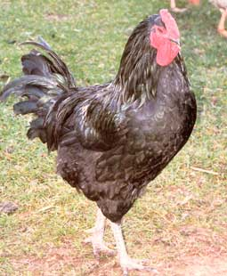
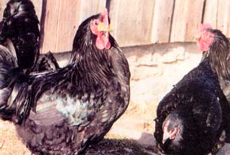

I work for the Garfield Farm Museum in LaFox, Illinois, a former prairie farmstead being restored as an 1840s working farm museum (see " Preserving History "). In the 1980s, Garfield Farm started keeping a small flock of Black Java chickens. Javas are one of the oldest, rarest and most useful chickens in North America. Java popularity in the United States peaked between 1850 and 1890. They were especially popular as a market bird in New York and New Jersey because their black pinfeathers quickly let consumers know whether a bird had been properly plucked. As chicken production became more centralized and industrialized, black feathers were seen as a disadvantage by producers. They preferred white specialty birds that hid bad plucking instead of pointing it out.
Even without industry support, Javas continue to be ideal small farm birds. They are dual-purpose birds that lay eggs well and produce good roasters reasonably fast. They are excellent foragers and do well for themselves in the barn yard. Hens lay large, rich, brown eggs, and most are good mothers to their chicks. Young cockerels make excellent table fare with juicy, flavorful meat. Roosters average about 9 1/2 pounds, while hens tend to be about 6 1/2 pounds. Their modest size and peaceful temperament make Javas easy to work with.
At Garfield Farm, we're trying to reintroduce these birds to landowners. Even if they have no experience with livestock, or don't have enough land for a herd of sheep or cattle, they can still help preserve this rare breed. So many heritage livestock breeds are rapidly disappearing, and some are already lost. Even though Javas were once found throughout the eastern United States, their numbers have dipped so low some wondered whether it would be possible to save the breed from extinction.
When we at Garfield Farm heard about the low numbers of Black Javas left, we switched our small flock from pure display to a concentrated effort to restore a viable Java population. The first step was to prove our Javas were pure. University of Iowa researchers compared our birds' genes to those of modern breeds descended from Javas and birds from the last commercial supplier, Duane Urch. Urch/Turnland Poultry in Owatonna, Minnesota, also supplied Garfield Farm's original flock. We had great hope for our flock, since the Urch flock had been closed since the late 1950s and was possibly free from crossbreeding.
The tests came back with a strong possibility that our flock is purebred and genetically different from other breeds, such as the Black Jersey Giant, a Java hybrid. We also found out that we had several distinct lineages present. All this was great news. It meant we had a better chance of expanding our small flock into a viable breeding community capable of re-establishing the Black Java population.
Then we received even more good news. The Museum of Science and Industry in Chicago offered to incubate and hatch eggs in their facilities, allowing us to increase our numbers faster. With the increased number of chicks, we have been able to increase our own flock and have chicks available for individuals who want to start their own flocks.
We were thrilled our repopulation efforts were working so well. Then in 1999, we were shocked and thrilled when four of our chicks came out white. Although never officially recognized as a breed, White Javas are a known variation of the Blacks. The last White Java chicken was seen in the 1950s, but the genes for the variety lay hidden in our flock of Blacks. We jumped on the opportunity to reintroduce another variety. We now have 75 White Javas and will be able to sell a few this year to establish new flocks. Some of our Whites have a blue-gray color on their first feathers. We're hopeful that we can use these chicks to revive the Blue Java variety. So far, none of the chicks have kept their blue tendencies into adulthood, but given our string of luck, we hope to have a Blue flock soon.
What Javas need now are opportunities on small farms across the country. Their attitude, size, and meat and egg quality make them ideal homestead birds. You don't have to live on an old-fashioned farmstead to bring this important piece of American agricultural history back from the edge of oblivion. Just let us know you want to help.
For more information about the Java breed or to inquire about starting your own Java flock, contact the Garfield Farm Museum at info@garfieldfarm.org ; (630) 584-8485; or Garfield Farm Museum, P.O. Box 403, LaFox, IL 60147. You can visit Garfield Farm on the Web at www.garfieldfarm.org . To join the Java Club contact Pete Malmberg at pamhlm@raccoon.com .
Defying Chicago's western sprawl is the historically intact 281-acre, the sole survivor of the prairie farms and farmer's inns that supported Chicago's incredible growth in the 1840s. Over 2,300 households from 37 states have contributed to the grassroots effort to preserve this time capsule as a working farm museum. Historic guided tours of the farm can quickly lead to discussions of the current loss of genetic diversity, farmland threatened by development, the rarity of black-soil prairies or economics that prevent starving populations access to the overflowing cornucopia of American farmers. Founded by a few rare and persistent individuals, the project is now acquiring the second generation's 99-acre farm with a $2.5 million fundraising campaign. Adding this farm will make expanded rare breed preservation possible. Garfield is currently home to milking Devon cattle, wrinkled Merino sheep, Pilgrim geese, Narragansett turkeys and two Berkshire hogs. See contact information in the story above.
|
 Java chickens are about as close to the original domesticated chicken as you can get. However, the pressures of industrial agriculture have pushed the breed close to extinction. |
Great homestead birds, Java chickens have a peaceful temperament and forage, lay and grow with little human involvement. |
 |